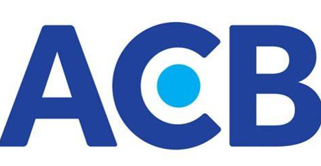
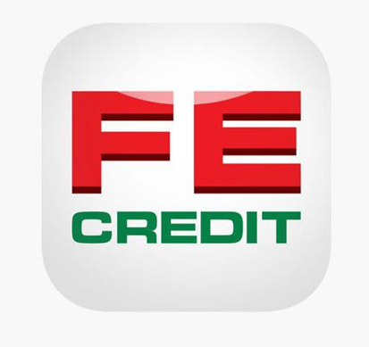
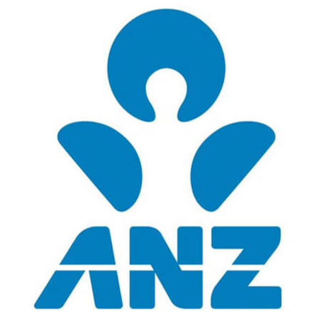

Professional Experience

Asia Commercial Bank (ACB) – Business Analyst
(12/2022 – 09/2022)
- Created Business Requirement Specs (BRS), SRS, and User Stories.
- Acted as bridge between Business Units and IT vendors.
- Supported UAT, wrote test scenarios, ensured traceability.
GFT Technologies Vietnam – Business Analyst
(09/2021 – 11/2022)
- Acted as proxy Product Owner, managed backlog, validated features.
- Prepared user stories, contributed to release planning and validation.
JACCS International Vietnam – Business Analyst
(09/2020 – 08/2021)
- Analyzed and documented requirements from business divisions.
- Worked with vendors on solution implementation and integration.
- Prepared test scenarios and supported UAT.

FE Credit – Business Analyst
(05/2016 – 05/2018)
- Conducted analysis of business and user needs to develop requirements.
- Designed and validated solutions with development and systems teams.
- Created test scripts, executed UAT, delivered user training.

ANZ Bank – Product Business Analyst
(01/2010 – 08/2012)
- Improved and documented business processes for Wealth & Insurance products.
- Supported UAT and coordinated with IT development teams.
- Prepared business requirement analysis and system specifications.
Other experience: Roles at Home Credit, N2N-AFE Hong Kong, Cadena Vietnam, CMS, and Campina Vietnam.